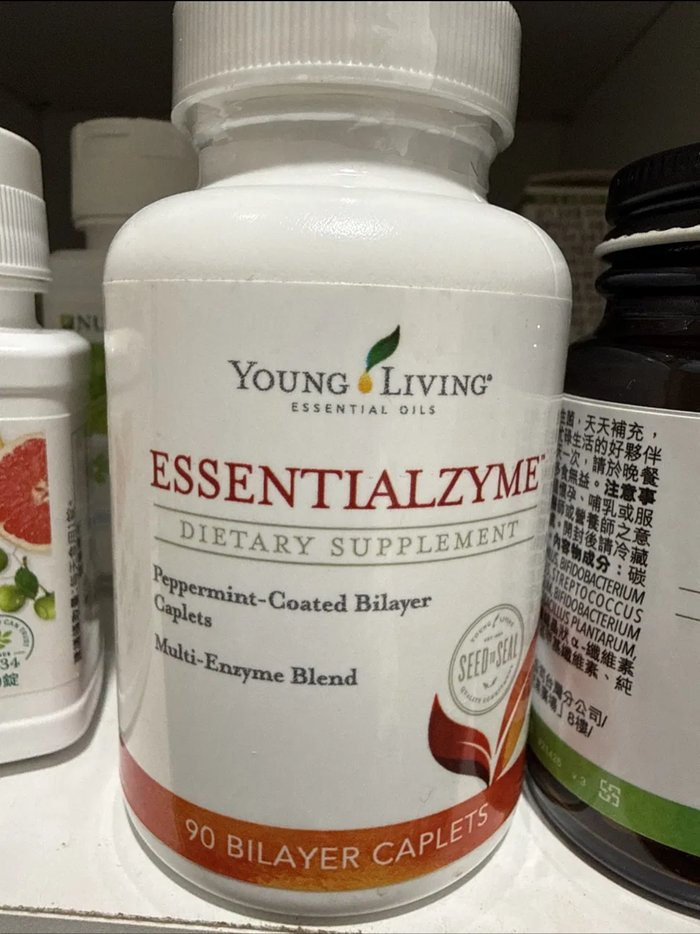
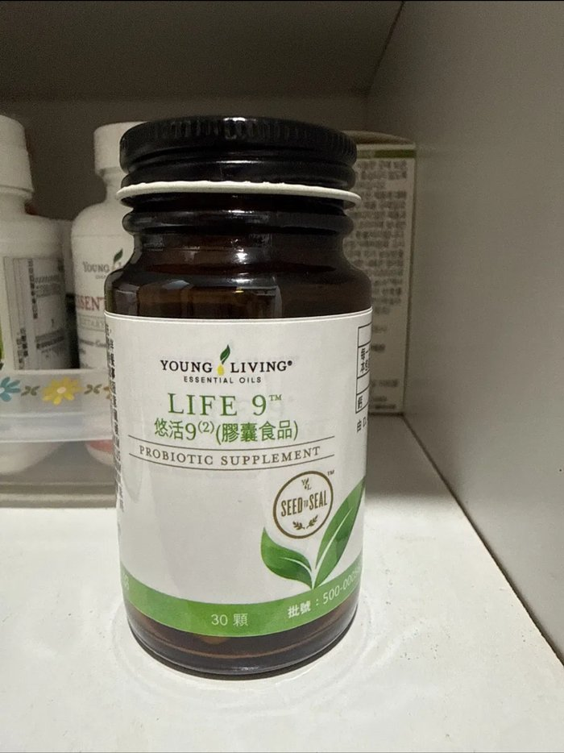

四大專案
點一張卡片，直接跳到那個分頁
美術教室
備課、教案、教材收集。目前進行中：三～五年級梵谷主題教案。
行政工作
註冊組事務：學生資料整理、印獎狀、編班。
學習規劃
兩個孩子（小二、國一）的課表安排與數學英文學習規劃。
健康家庭
營養與身體健康相關的規劃與研究。
🧩 已建置的工具網站
每次做出新的工具或網頁，都會列在這裡，方便你一次看到全部。
📓 AI 學習歷程
這裡記錄使用 AI／建置這個網站過程中踩過的坑，之後可以整理成給同事看的「排錯 FAQ」。
AI指令工具整合
Ruby 的 AI 記憶檔內容，方便隨時複製貼給 AI
■ 我是誰
Ruby，美術老師兼學校註冊組長，同時也是兩個孩子（小二、國一）的媽媽。對英語教材研究和營養健康也有濃厚興趣。
■ 現在進行中的事
- 美術課程：三到五年級，梵谷主題教案，正在準備教學內容與收集資料
■ 希望 AI 記住的固定資訊
待補充——之後想到隨時可以補上，例如常用教案格式、學校行事曆、孩子的課表節奏等。
■ 跟我互動的方式
- 先給結論，再詳細解釋原因
- 不要用太多專業術語，用生活化的方式說明
■ 我的四條使用原則
- 重要的東西（要發出去給別人的、會影響決定的），我自己看過確認過才用。
- 同一份資料只放一個地方，不要東一份西一份。
- AI 給的答案要能說出依據；說不出依據的，多問一句「你確定嗎？根據是什麼？」
- 別人的個人資料（學生、家長、同事的姓名等）不貼給 AI，需要時先改成代號。
■ 我的網站
ruby-site.hcrrabbit.workers.dev
程式放在 GitHub（hcrrabbit-lgtm/ruby-site）。
要改版面就請 Claude 生成 HTML，我貼到 GitHub 網頁版按 Commit 就會自動更新。
■ 網站架構與部署 SOP（透明化紀錄，方便核對 Claude 理解得對不對）
- 平台：Cloudflare Workers（不是舊版的 Pages，兩者已整合，但概念相同）。網址是 Cloudflare 免費送的 .workers.dev 網域。
- 部署流程：GitHub repo（hcrrabbit-lgtm/ruby-site）的 main 分支接了 Cloudflare 自動部署，只要檔案推上 GitHub，1～2分鐘內網站自動更新，不用手動按部署。
- 檔案結構：靜態網頁（HTML）都放在 public/ 資料夾；worker/index.js 是後端程式，負責處理資料庫存取；wrangler.jsonc 是設定檔，記錄資料庫、儲存空間怎麼接上。
- 資料庫：上課助手用 Cloudflare D1（資料庫，名稱 ruby-class-db）存點名、評分、學生名單這類文字資料；用 R2（名稱 ruby-class-photos）存作品照片。
- Claude 怎麼幫忙推送更新：需要改 GitHub 上的檔案時，Ruby 會建立一組「只能動這個 repo」的臨時權杖（GitHub Fine-grained Personal Access Token）給 Claude，Claude 用完後 Ruby 可以自行到 GitHub 刪除，權杖不會被 Claude 保存。
- 目前的隱私防護：網站是公開網址，任何知道連結的人都能打開；目前只用 robots.txt + noindex 擋掉 Google 搜尋收錄，還沒有登入門檻。
- 放真實學生資料前，必須先做的事：加裝 Cloudflare Access（免費、單人使用），要求登入才能打開網站。目前還在用假資料測試階段，先不設，等系統穩定、要放真實學生資料時再設定。Claude 收到指示：之後只要對話提到要放真實/可辨識的學生資料，要主動提醒這件事。
- 雲端花費：Cloudflare R2 免費額度是每月 10GB 儲存 + 100萬次操作，個人單一老師使用量遠低於這個門檻；已設定 Budget Alert（花費超過門檻會寄 email 通知，但不會自動斷線）。
■ 待補充
- 美術備課／教案的常用格式
- 註冊組行政事務（有進行中的可以補）
- 兩個孩子的課表細節、學習安排
- 英文教材研究、營養健康相關的具體需求
🎨 美術教室
備課、教案、教材收集，以及實際上課會用到的小工具。
上課助手 →
打開後自動判斷今天上哪個班、點名、秩序評分、作品拍照分級評分。
教案與教材收集區塊準備中。
目前已知：三～五年級梵谷主題教案。
行政工作
準備中——之後這裡會放註冊組相關事務：學生資料整理、印獎狀、編班進度。
📚 學習規劃
兩個孩子（小二、國一）的課表、學習安排，以及親子活動情報。
本週活動情報站 →
整理台中、彰化、南投的政府、公所、學校親子活動公告，每週更新一次。
圍棋比賽資訊 →
中彰投、雲林、新北、台北的圍棋比賽整理，提醒即將開放報名的賽事。
Better Me →
紀錄小孩每天的學習習慣（例如：閱讀30分鐘、複習功課、練習圍棋），每月自動累積成統計表。
課表與數學英文學習規劃準備中。
🌿 健康家庭
目前家中營養品的一日搭配時間軸（Young Living 系列）。
🌅 早餐前（空腹）
Detoxzyme 素食酵素
2顆兩餐之間或空腹服用，幫助全身酵素活性、消化與代謝。
🍳 早餐時
Sulfurzyme 勁捷配方
2顆MSM + 寧夏枸杞粉，關節、皮膚毛髮保健，隨餐或飯前後1小時皆可。
🍱 午餐前1小時

Essentialzyme 消化酵素
1錠最大一餐前1小時服用，幫助分解脂肪、蛋白質、澱粉。與 Essentialzymes-4 擇一，不同餐重複。
☕ 下午（兩餐之間）
Detoxzyme 素食酵素
2顆第二次補充，兩餐之間服用。
🍽️ 晚餐時
Sulfurzyme 勁捷配方
2顆第二次補充，隨餐或飯前後1小時皆可。
🌙 睡前（飯後）

Life 9 悠活9 益生菌
1顆每晚飯後服用，胃酸較少時益生菌存活率較高。
⚠️ 使用提醒
以上皆為保健食品，非藥品，官方建議劑量僅供參考。
如有慢性病、正在服藥（尤其抗凝血藥、甲狀腺藥物等），使用前建議先諮詢醫師或藥師。
Essentialzyme 與 Essentialzymes-4 功能重疊，同一餐請擇一使用，不要疊加。
✅ 每日習慣追蹤
點一下打卡今天完成的習慣，下面會自動累積成本月統計表。